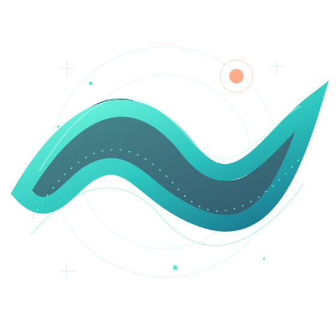

First release / En préparation
ZIGSPIRE.
Un robot. Deux parois. Une ascension qui ne pardonne pas. Changez de côté, évitez les pièges et gardez le rythme.
Entrer dans le jeuL'esprit libre de l'Atlantique, l'énergie des jeux d'arcade et l'envie de créer autrement. Bienvenue chez Baskwave Studio, un studio indépendant né sur la côte basque.

Une première vague de jeux accessibles, exigeants et conçus pour donner envie de recommencer.
Un robot. Deux parois. Une ascension qui ne pardonne pas. Changez de côté, évitez les pièges et gardez le rythme.
Entrer dans le jeuLe studio cultive une même idée : mêler la spontanéité du jeu à un vrai goût du détail.
La côte basque comme point d'ancrage : une culture du mouvement, de l'exploration et de la liberté.
Des expériences imaginées avec attention, de la première mécanique au dernier pixel.
Du défi, du rythme et des commandes intuitives. Facile à prendre en main, difficile à lâcher.